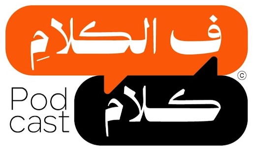

← الحلقات
عن نفسك · الحلقة ١

الحلقة١إنت بطل قصتكإنت بطل قصتك
٤ يوليو ٢٠٢٦ · ٤:٠٩ · #فيلم #عن_نفسك
لو حياتك كانت فيلم...
هتكون راضي عن الدور اللي بتلعبه؟
لو حياتك كانت فيلم... هتكون راضي عن الدور اللي بتلعبه؟
نص الحلقةاقرا النص
تعرف إيه أخطر دور ممكن تعيشه؟ الكومبارس. لو حياتك كانت فيلم وبتتفرج عليه دلوقتي هتكون مبسوط بالدور اللي بتلعبه ولا هتحس إنك مجرد extra موجود بس في الكادر؟ أصل في ناس عايشة حياتها كأنها مجرد شخصية جانبية مستنية الأحداث تحصل وخلاص ومستنية الناس تحددلها قيمتها وتقولها هي تستاهل إيه ومتستاهلش إيه مع إن الحقيقة مختلفة تمامًا.
حياتك مش فيلم حد تاني ومش دور ثانوي في قصة حد دي قصتك إنت وإنت مش مجرد حد فيها إنت الـ lead role إنت اللي بتقرر تمشي فين تقف فين وتكمل إزاي حتى لو الظروف مش دايمًا بإيدك بس رد فعلك واختياراتك دول بإيدك جدًا وعشان كده أي بطل حقيقي عمره ما كان perfect بالعكس يمكن أغلب الأبطال بدأوا وهم تايهين أصلًا.
هل عمرك شوفت بطل قصة أو مسلسل فاشل؟ آه يا ملك وارد جدًا. طيب السؤال الأهم هل فضل واقف عند فشله ولا اتعلم واتغير؟ طب هل شوفت بطل حقيقي شخصيته ضعيفة؟ حد بيقبل أي معاملة وخلاص؟
أكيد لأ. طيب ليه؟ لأن البطل الحقيقي حتى لو بيتعب حتى لو بيقع بيبقى عارف إن ليه قيمة وده ياخدنا لحاجة مهمة جدًا المعنى الحقيقي مش إنك بس البطل إنت كمان الكاتب إنت اللي كل يوم بتكتب فصل جديد بتشكل شخصيتك بطريقتك في التفكير بطريقة كلامك عن نفسك وبالحاجات اللي بتقبلها أو ترفضها حتى التفاصيل الصغيرة بتفرق.
خليني أحكيلك موقف شفته بعيني في يومين مختلفين نفس الموقف تقريبًا لكن نهايتين مختلفتين تمامًا. الشخص الأول حد كلمه بطريقة فيها تقليل فسكت وعدّى الموضوع لكن الموضوع ما انتهش عند كده بقى ده الطبيعي الناس بدأت تتعامل معاه بنفس الطريقة كل مرة وكان المسدج اللي هو سابها اوكي أنا قابل بده.
أما الشخص التاني فنفس الموقف حصل معاه بس رده كان مختلف كان فيما معناه إنه اتكلم معايا كويس بس لا خناق ولا صوت عالي لكن طريقته نفسها كان فيها كأنه عارف كويس هو مين وعارف إنه ميقبلش أقل من كده.
فالانرجي اللي طلعها أنهت الموقف فورًا والأهم إن الشخص اللي قدامه غالبًا فكر ألف مرة قبل ما يكرر حاجة زي كده تاني. وهنا بقى الفرق الحقيقي الفرق مش في الناس الفرق في الـ mindset لو شايف نفسك قليل هتقبل أي حاجة لكن لو شايف نفسك إنك تستاهل الاحترام الناس بتحس بده حتى من غير ما تتكلم كتير.
وتخيل بعد سنين إن في حد أصغر منك بيتعلم منك مش بالكلام لكن من الـ vibes من طريقتك من نظرتك لنفسك هتتمنى يشوفك إزاي شخص قوي شخص واثق شخص عارف قيمته ولا شخص مستني طول الوقت حد يطمنه إنه كفاية.
عشان كده النهارده اسأل نفسك سؤال مهم أنا بتعامل مع نفسي على إني فعلًا شخص يستاهل ولا مستني حد ييجي يثبتلي ده؟ لأن فيه فرق كبير بين حد عايش حياته وحد حياته هي اللي ممشياه.
يمكن مش هتقدر تتحكم في كل حاجة حواليك بس تقدر تتحكم في دورك تكون البطل ولا مجرد background character فـ انت بطل قصتك دي مش مجرد جملة تحفيزية وخلاص دي mindset كاملة لواحد بيقول أنا مسؤول عن حياتي عن اختياراتي عن الطريق اللي همشيه وأنا أستاهل أعيش الحياة دي بالشكل اللي يرضيني. كانت معاكم ملك فرج، وأشوفكم في حلقة جديدة من ف الكلامِ كلام.